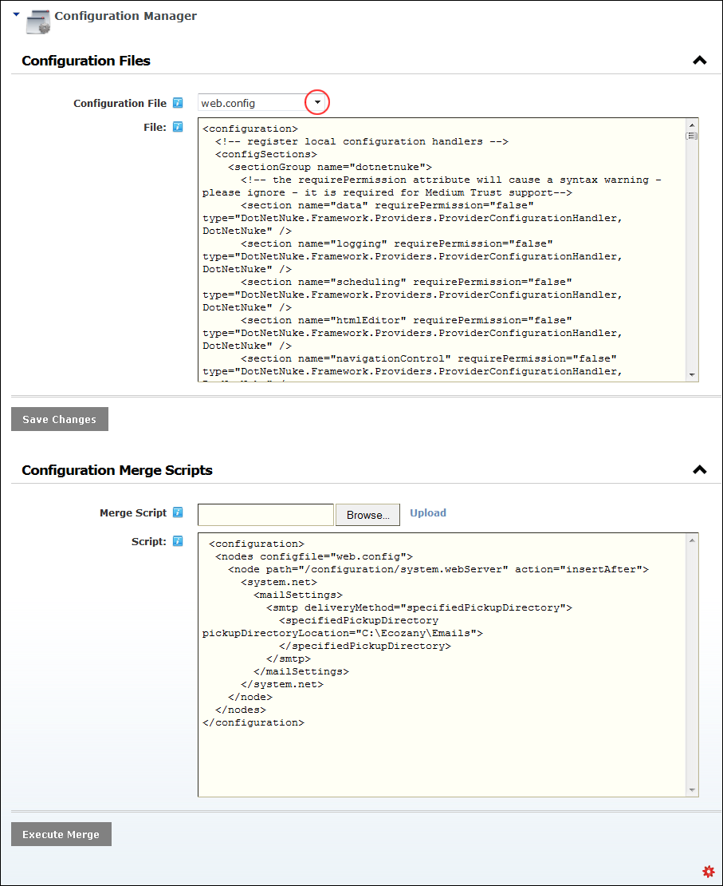
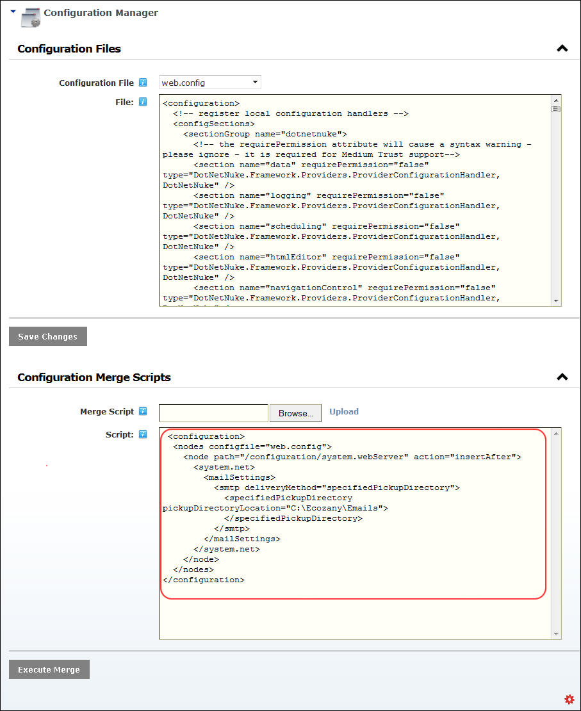

Merging Configuration Scripts
How to merge configuration scripts using the Configuration Manager module.
- Navigate to Host >
 Configuration Manager.
Configuration Manager.
- Expand the Configuration Files section.
- At Configuration File, select the file to be modified from the drop down list. This loads the selected file into the File text box.

- Expand the Configuration Merge Scripts section.
- At Merge Script, select from these option:
- To upload a script file:
- Click the Browse... button.
- Select the required file.
- Click the Upload link. This loads the selected file into the text window below.
- or paste your script into the Scripts text box.
- Click the Execute Merge link. Review any message which is displayed and then click OK to continue.

- Optional. To view the successful merge, search for a part of the merged script in the Configuration Files section.